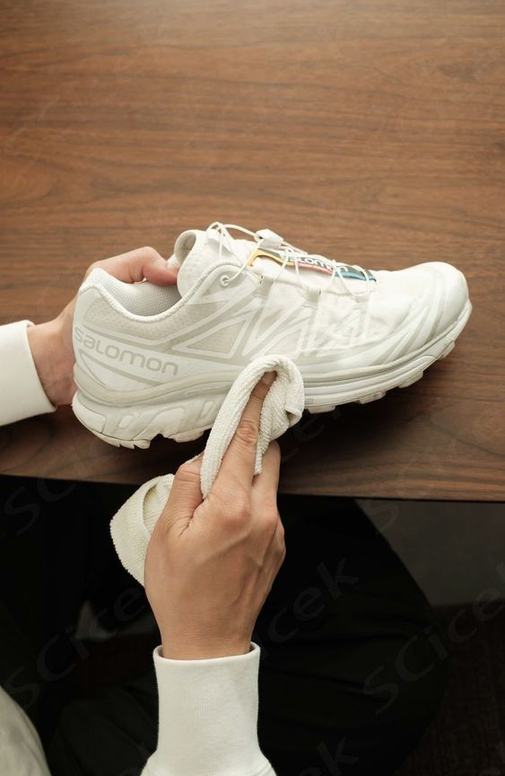
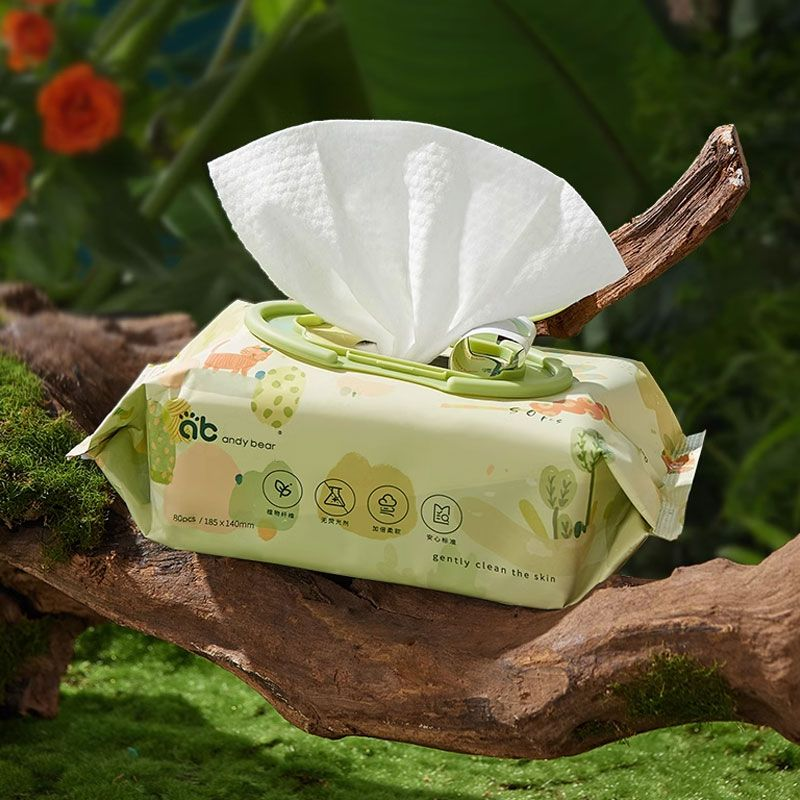
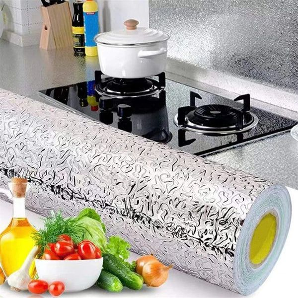
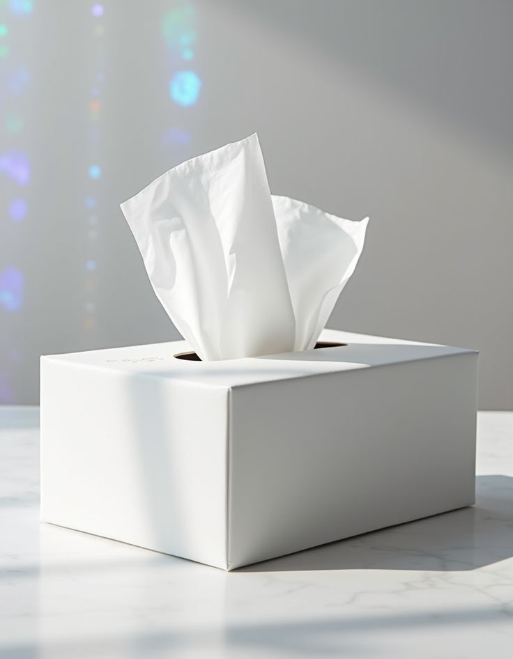
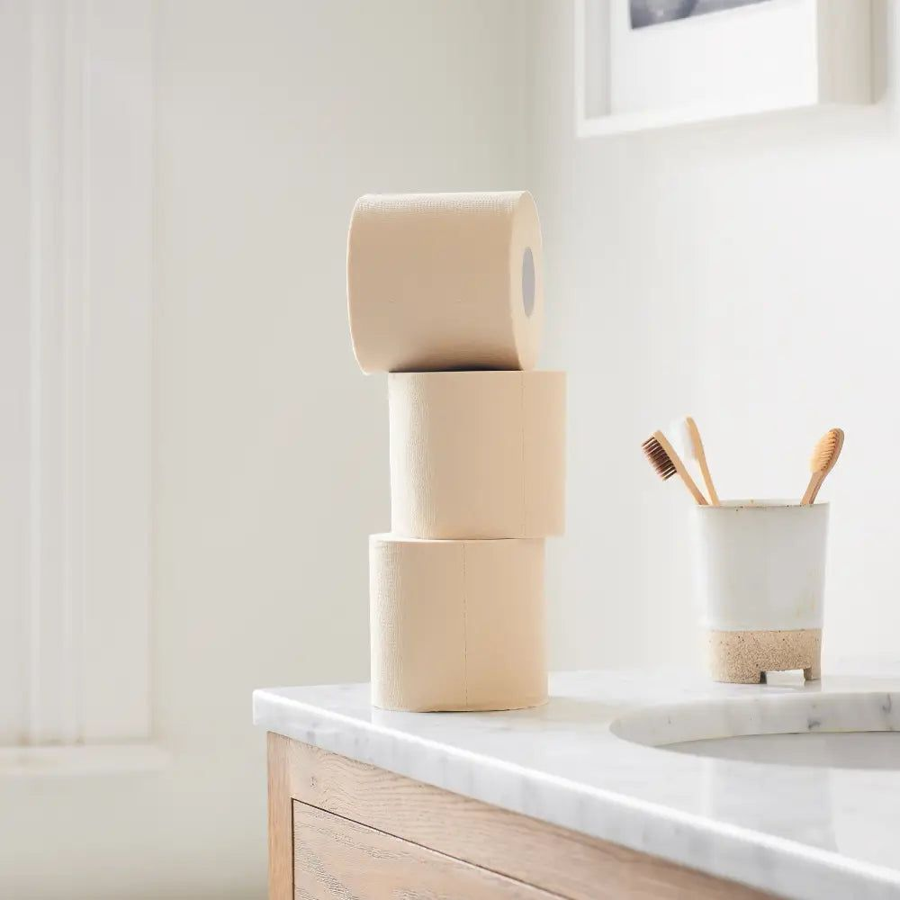
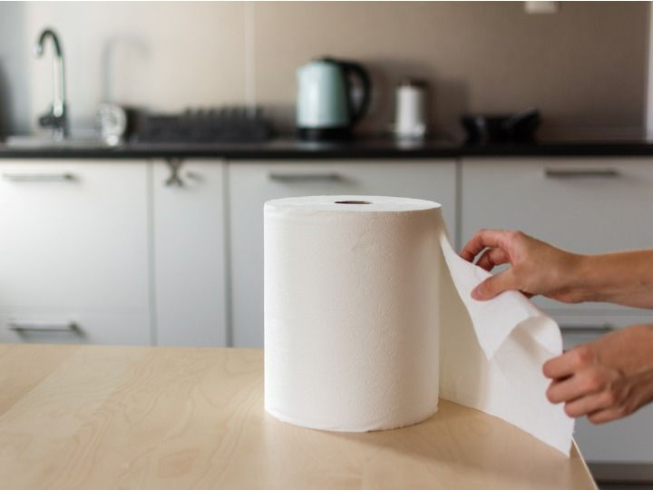
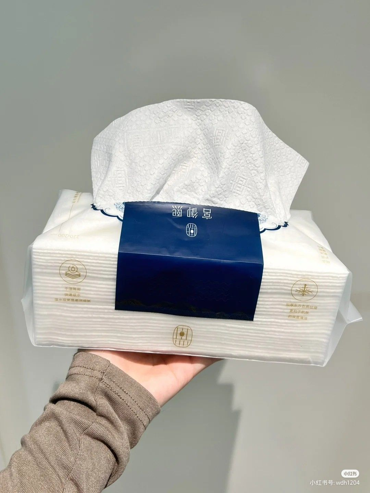
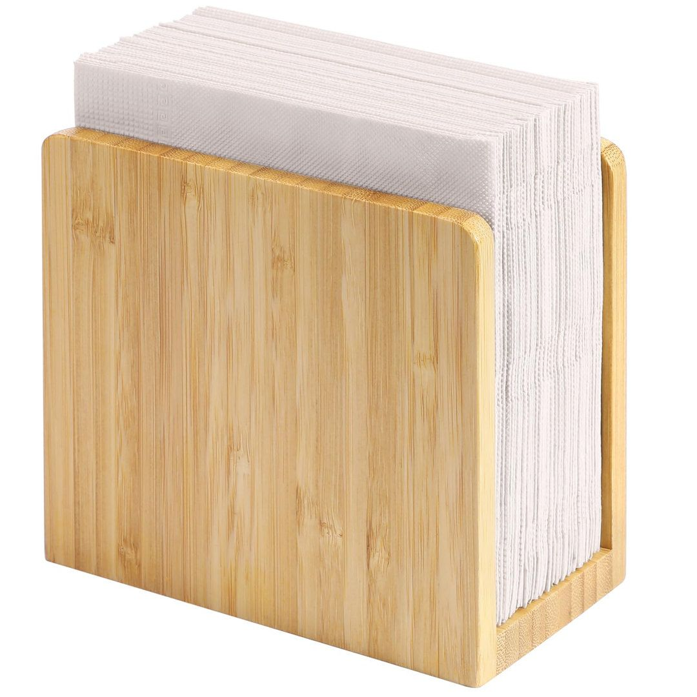

Sneaker wipes
Specially designed wipes for quick and effective shoe cleaning.
Papyrex sneaker wipes remove dirt, stains, and marks from shoes without damaging the material. They are safe to use on leather, synthetic, rubber, and fabric surfaces, making them ideal for on-the-go sneaker care.
Quick cleaning without water
Non-abrasive and material-safe
Portable and easy to use
Papyrex sneaker wipes remove dirt, stains, and marks from shoes without damaging the material. They are safe to use on leather, synthetic, rubber, and fabric surfaces, making them ideal for on-the-go sneaker care.
Quick cleaning without water
Non-abrasive and material-safe
Portable and easy to use

Wet wipes
Multi-purpose wipes for hygiene and surface cleaning.
Our wet wipes are made with gentle yet effective formulations that clean, refresh, and sanitize. Suitable for personal use, travel, workplaces, and public spaces.
Soft and skin-friendly
High moisture retention
Available in scented and unscented options
Our wet wipes are made with gentle yet effective formulations that clean, refresh, and sanitize. Suitable for personal use, travel, workplaces, and public spaces.
Soft and skin-friendly
High moisture retention
Available in scented and unscented options

Facial wipes
Gentle wipes for daily facial cleansing and refreshment.
Papyrex facial wipes are designed to cleanse, refresh, and remove impurities while being gentle on the skin. Suitable for everyday use and all skin types.
Soft texture for sensitive skin
Removes dirt and excess oil
Convenient for travel and daily use
Papyrex facial wipes are designed to cleanse, refresh, and remove impurities while being gentle on the skin. Suitable for everyday use and all skin types.
Soft texture for sensitive skin
Removes dirt and excess oil
Convenient for travel and daily use

Kitchen foil
Durable aluminum foil for everyday kitchen use.
Papyrex kitchen foil is designed for food wrapping, cooking, and storage, helping preserve freshness and protect food. Ideal for home kitchens, restaurants, and food services.
Strong and tear-resistant
Maintains food freshness
Suitable for cooking and storage
Papyrex kitchen foil is designed for food wrapping, cooking, and storage, helping preserve freshness and protect food. Ideal for home kitchens, restaurants, and food services.
Strong and tear-resistant
Maintains food freshness
Suitable for cooking and storage

Facial Tissues
Soft and gentle tissues ideal for daily personal use.
Smooth texture and skin-friendly
High absorbency
Suitable for home, office, and travel use
Smooth texture and skin-friendly
High absorbency
Suitable for home, office, and travel use

Toilet Tissues (Toilet Rolls)
Strong yet soft toilet paper designed for comfort and hygiene.
Quick-dissolving and septic-safe
Multiple ply options available
Quick-dissolving and septic-safe
Multiple ply options available

Kitchen Towels
Highly absorbent towels for kitchen cleaning and spills.
Strong wet strength
Effective for oil, water, and food spills
Suitable for home and commercial kitchens
Strong wet strength
Effective for oil, water, and food spills
Suitable for home and commercial kitchens

Hand Towels
Perfect for restrooms, offices, hospitals, and hospitality spaces.
Hygienic single-use drying solution
High absorbency and durability
Available in folded and roll formats
Hygienic single-use drying solution
High absorbency and durability
Available in folded and roll formats

Napkins
Designed for dining and food service applications.
Soft yet sturdy texture
Suitable for restaurants, cafés, hotels, and events
Available in multiple sizes and folds
Soft yet sturdy texture
Suitable for restaurants, cafés, hotels, and events
Available in multiple sizes and folds